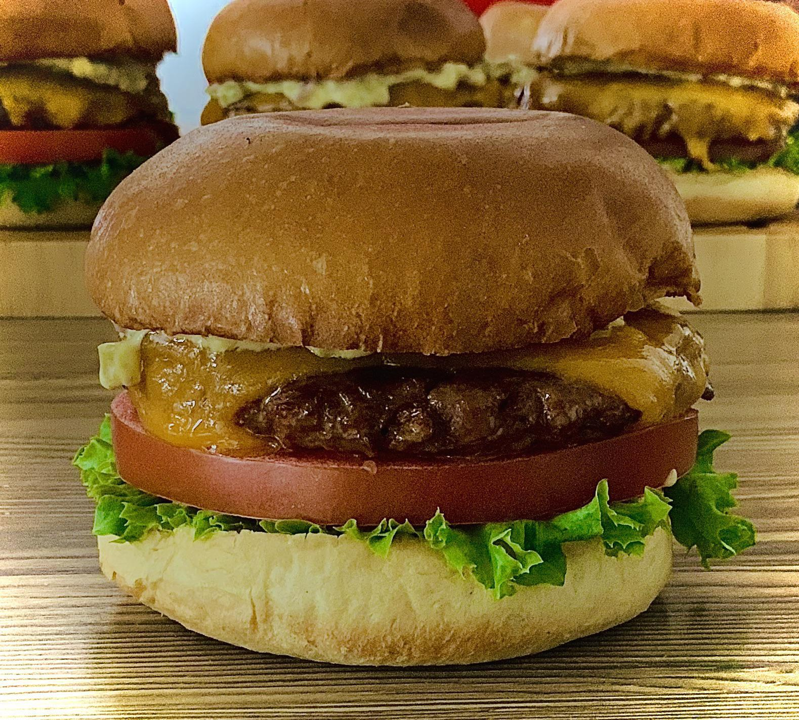
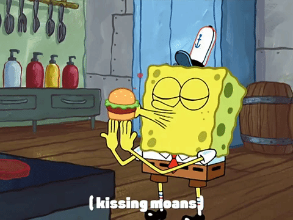

The Krabby Patty Recipe

A short-and-sweet and easy-to-follow Krabby Patty recipe!
Whip up a Krabby Patty burger in less
than 15 minutes for you and your Spongebob-loving relatives or friends!
All ingredients used are fresh and organic, and no Planktons would be harmed
making this savoury cartoon classic!
The Ingredients
Burger Patties
- 1 1/3 lb. Ground Beef (80% lean)
- 2 tsp. Old Bay Seasoning
- 1 tsp. Black Pepper
- 1 tsp. Sea Salt
- 4 Slices of Cheddar Cheese
King Neptune's Poseidon Powder Aioli
- 1/2 c. Mayonnaise
- 1 tsp. Old Bay seasoning
Sandwich
- 4 Sesame Seed Buns, sliced in half
- Ketchup
- Mustard
- 1 Jar of Dill Pickles Slices
- 1 Red Onion, sliced
- 1 Tomato, sliced
- 4 Leaves of Butter Lettuce
The Steps to Cooking One Up
- Make the Burger Patties: Heat a grill pan or sauté pan over medium heat. As it heats, combine ground beef, Old Bay, pepper and salt. Form into four equally sized patties, about 1/3 lb apiece. Set on a platter next to the stovetop. Coat the warmed grill pan with cooking spray and place patties on the pan, cooking each side about 4-5 minutes, or until cooked through to your desired doneness.
- Use a large star-shaped cookie cutter to cut each cheese slice into a star shape. Place the star-shaped cheese on each burger patty, in the last 30 seconds or so of cooking, so it melts a little. Set burger patties aside.
- Make King Neptune's Poseidon Powder Aioli: Stir mayo and Old Bay until thoroughly combined.
- Assemble the Sandwich: Spread Poseidon Powder Aioli on the bottom of each bun. Top with a burger patty, ketchup, mustard, pickles, onion slices, tomato and lettuce. Place the top bun on each burger. Serve.
But remember, nobody makes it like the connoisseur Spongebob!
